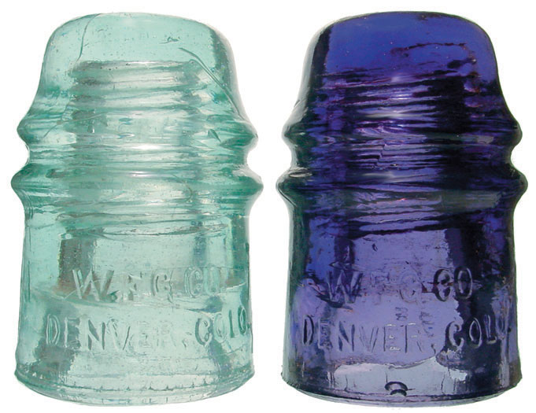
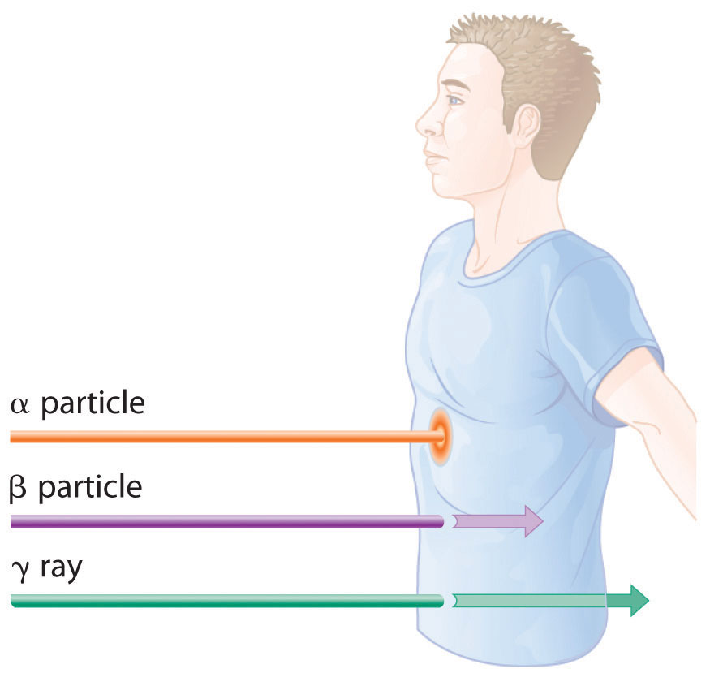
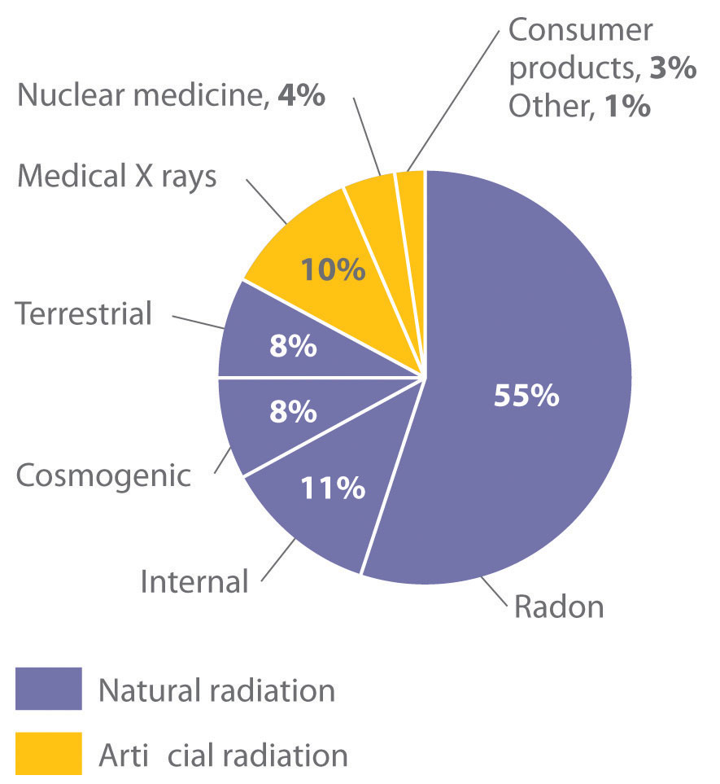
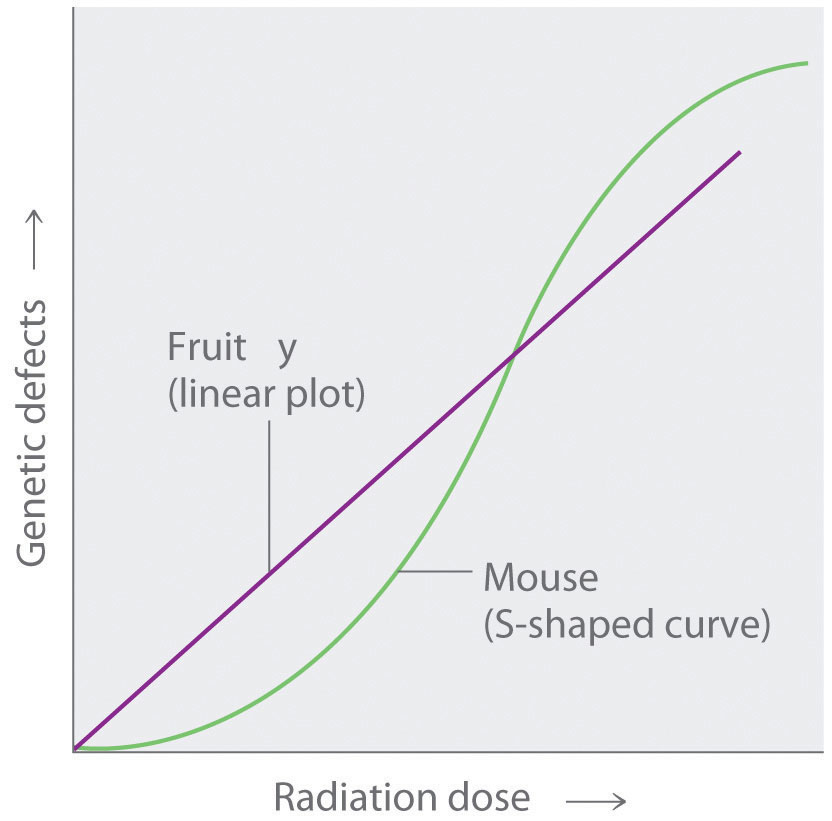

Because nuclear reactions do not typically affect the valence electrons of the atom (although electron capture draws an electron from an orbital of the lowest energy level), they do not directly cause chemical changes. Nonetheless, the particles and the photons emitted during nuclear decay are very energetic, and they can indirectly produce chemical changes in the matter surrounding the nucleus that has decayed. For instance, an α particle is an ionized helium nucleus (He2+) that can act as a powerful oxidant. In this section, we describe how radiation interacts with matter and the some of the chemical and biological effects of radiation.
The effects of radiation on matter are determined primarily by the energy of the radiation, which depends on the nuclear decay reaction that produced it. Nonionizing radiationRadiation that is relatively low in energy. When it collides with an atom in a molecule or ion, most or all of its energy can be absorbed without causing a structural or a chemical change. is relatively low in energy; when it collides with an atom in a molecule or an ion, most or all of its energy can be absorbed without causing a structural or a chemical change. Instead, the kinetic energy of the radiation is transferred to the atom or molecule with which it collides, causing it to rotate, vibrate, or move more rapidly. Because this energy can be transferred to adjacent molecules or ions in the form of heat, many radioactive substances are warm to the touch. Highly radioactive elements such as polonium, for example, have been used as heat sources in the US space program. As long as the intensity of the nonionizing radiation is not great enough to cause overheating, it is relatively harmless, and its effects can be neutralized by cooling.
In contrast, ionizing radiationRadiation of a high enough energy to transfer some as it passes through matter to one or more atoms with which it collides. If enough energy is transferred, electrons can be excited to very high energy levels, resulting in the formation of positively charged ions. is higher in energy, and some of its energy can be transferred to one or more atoms with which it collides as it passes through matter. If enough energy is transferred, electrons can be excited to very high energy levels, resulting in the formation of positively charged ions:
Equation 20.23
atom + ionizing radiation → ion+ + e−Molecules that have been ionized in this way are often highly reactive, and they can decompose or undergo other chemical changes that create a cascade of reactive molecules that can damage biological tissues and other materials (Figure 20.11 "Radiation Damage"). Because the energy of ionizing radiation is very high, we often report its energy in units such as megaelectronvolts (MeV) per particle: 1 MeV/particle = 96 billion J/mol.
Figure 20.11 Radiation Damage
When high-energy particles emitted by radioactive decay interact with matter, they can break bonds or ionize molecules, resulting in changes in physical properties such as ductility or color. The glass electrical insulator on the left has not been exposed to radiation, but the insulator on the right has received intense radiation doses over a long period of time. Radiation damage changed the chemical structure of the glass, causing it to become bright blue.
The effects of ionizing radiation depend on four factors:
The relative abilities of the various forms of ionizing radiation to penetrate biological tissues are illustrated in Figure 20.12 "Depth of Penetration of Ionizing Radiation". Because of its high charge and mass, α radiation interacts strongly with matter. Consequently, it does not penetrate deeply into an object, and it can be stopped by a piece of paper, clothing, or skin. In contrast, γ rays, with no charge and essentially no mass, do not interact strongly with matter and penetrate deeply into most objects, including the human body. Several inches of lead or more than 12 inches of special concrete are needed to completely stop γ rays. Because β particles are intermediate in mass and charge between α particles and γ rays, their interaction with matter is also intermediate. Beta particles readily penetrate paper or skin, but they can be stopped by a piece of wood or a relatively thin sheet of metal.
Figure 20.12 Depth of Penetration of Ionizing Radiation
The depth of penetration of alpha, beta, and gamma radiation varies with the particle. Because α particles interact strongly with matter, they do not penetrate deeply into the human body. In contrast, β particles do not interact as strongly with matter and penetrate more deeply. Gamma rays, which have no charge, are stopped by only very dense materials and can pass right through the human body without being absorbed.
Because of their great penetrating ability, γ rays are by far the most dangerous type of radiation when they come from a source outside the body. Alpha particles, however, are the most damaging if their source is inside the body because internal tissues absorb all of their energy. Thus danger from radiation depends strongly on the type of radiation emitted and the extent of exposure, which allows scientists to safely handle many radioactive materials if they take precautions to avoid, for example, inhaling fine particulate dust that contains alpha emitters. Some properties of ionizing radiation are summarized in Table 20.3 "Some Properties of Ionizing Radiation".
Table 20.3 Some Properties of Ionizing Radiation
| Type | Energy Range (MeV) | Penetration Distance in Water* | Penetration Distance in Air* |
|---|---|---|---|
| α particles | 3–9 | < 0.05 mm | < 10 cm |
| β particles | ≤ 3 | < 4 mm | 1 m |
| x-rays | <10−2 | < 1 cm | < 3 m |
| γ rays | 10−2–101 | < 20 cm | > 3 m |
| *Distance at which half of the radiation has been absorbed. | |||
Born in the Lower Rhine Province of Germany, Röntgen was the only child of a cloth manufacturer and merchant. His family moved to the Netherlands where he showed no particular aptitude in school, but where he was fond of roaming the countryside. Röntgen was expelled from technical school in Utrecht after being unjustly accused of drawing a caricature of one of the teachers. He began studying mechanical engineering in Zurich, which he could enter without having the credentials of a regular student, and received a PhD at the University of Zurich in 1869. In 1876 he became professor of physics.
There are many different ways to measure radiation exposure, or the dose. The roentgen (R)A unit that describes the amount of energy absorbed by dry air and measures the radiation exposure or dose., which measures the amount of energy absorbed by dry air, can be used to describe quantitative exposure.Named after the German physicist Wilhelm Röntgen (1845–1923; Nobel Prize in Physics, 1901), who discovered x-rays. The roentgen is actually defined as the amount of radiation needed to produce an electrical charge of 2.58 × 10−4 C in 1 kg of dry air. Damage to biological tissues, however, is proportional to the amount of energy absorbed by tissues, not air. The most common unit used to measure the effects of radiation on biological tissue is the rad (radiation absorbed dose)A unit used to measure the effects of radiation on biological tissues; the amount of radiation that causes 0.01 J of energy to be absorbed by 1 kg of matter.; the SI equivalent is the gray (Gy). The rad is defined as the amount of radiation that causes 0.01 J of energy to be absorbed by 1 kg of matter, and the gray is defined as the amount of radiation that causes 1 J of energy to be absorbed per kilogram:
Equation 20.24
Thus a 70 kg human who receives a dose of 1.0 rad over his or her entire body absorbs 0.010 J/70 kg = 1.4 × 10−4 J, or 0.14 mJ. To put this in perspective, 0.14 mJ is the amount of energy transferred to your skin by a 3.8 × 10−5 g droplet of boiling water. Because the energy of the droplet of water is transferred to a relatively large area of tissue, it is harmless. A radioactive particle, however, transfers its energy to a single molecule, which makes it the atomic equivalent of a bullet fired from a high-powered rifle.
Because α particles have a much higher mass and charge than β particles or γ rays, the difference in mass between α and β particles is analogous to being hit by a bowling ball instead of a table tennis ball traveling at the same speed. Thus the amount of tissue damage caused by 1 rad of α particles is much greater than the damage caused by 1 rad of β particles or γ rays. Thus a unit called the rem (roentgen equivalent in man)A unit that describes the actual amount of tissue damage caused by a given amount of radiation and equal to the number of rads multiplied by the RBE. was devised to describe the actual amount of tissue damage caused by a given amount of radiation. The number of rems of radiation is equal to the number of rads multiplied by the RBE (relative biological effectiveness) factor, which is 1 for β particles, γ rays, and x-rays and about 20 for α particles. Because actual radiation doses tend to be very small, most measurements are reported in millirems (1 mrem = 10−3 rem).
We are continuously exposed to measurable background radiation from a variety of natural sources, which, on average, is equal to about 150–600 mrem/yr (Figure 20.13 "The Radiation Exposure of a Typical Adult in the United States"). One component of background radiation is cosmic rays, high-energy particles and γ rays emitted by the sun and other stars, which bombard Earth continuously. Because cosmic rays are partially absorbed by the atmosphere before they reach Earth’s surface, the exposure of people living at sea level (about 30 mrem/yr) is significantly less than the exposure of people living at higher altitudes (about 50 mrem/yr in Denver, Colorado). Every 4 hours spent in an airplane at greater than 30,000 ft adds about 1 mrem to a person’s annual radiation exposure.
Figure 20.13 The Radiation Exposure of a Typical Adult in the United States
The average radiation dose from natural sources for an adult in the United States is about 150–600 mrem/yr. Radon accounts for more than half of an adult’s total radiation exposure, whereas background radiation (terrestrial and cosmogenic) and exposure from medical sources account for about 15% each.
Data source: Office of Civilian Radioactive Waste Management
A second component of background radiation is cosmogenic radiation, produced by the interaction of cosmic rays with gases in the upper atmosphere. When high-energy cosmic rays collide with oxygen and nitrogen atoms, neutrons and protons are released. These, in turn, react with other atoms to produce radioactive isotopes, such as 14C:
Equation 20.25
The carbon atoms react with oxygen atoms to form CO2, which is eventually washed to Earth’s surface in rain and taken up by plants. About 1 atom in 1 × 1012 of the carbon atoms in our bodies is radioactive 14C, which decays by beta emission. About 5000 14C nuclei disintegrate in your body during the 15 s or so that it takes you to read this paragraph. Tritium (3H) is also produced in the upper atmosphere and falls to Earth in precipitation. The total radiation dose attributable to 14C is estimated to be 1 mrem/yr, while that due to 3H is about 1000 times less.
The third major component of background radiation is terrestrial radiation, which is due to the remnants of radioactive elements that were present on primordial Earth and their decay products. For example, many rocks and minerals in the soil contain small amounts of radioactive isotopes, such as 232Th and 238U, as well as radioactive daughter isotopes, such as 226Ra. The amount of background radiation from these sources is about the same as that from cosmic rays (approximately 30 mrem/yr). These isotopes are also found in small amounts in building materials derived from rocks and minerals, which significantly increases the radiation exposure for people who live in brick or concrete-block houses (60–160 mrem/yr) instead of houses made of wood (10–20 mrem/yr). Our tissues also absorb radiation (about 40 mrem/yr) from naturally occurring radioactive elements that are present in our bodies. For example, the average adult contains about 140 g of potassium as the K+ ion. Naturally occurring potassium contains 0.0117% 40K, which decays by emitting both a β particle and a γ ray. In the last 20 seconds, about the time it took you to read this paragraph, approximately 40,000 40K nuclei disintegrated in your body.
By far the most important source of background radiation is radon, the heaviest of the noble gases (group 18). Radon-222 is produced during the decay of 238U, and other isotopes of radon are produced by the decay of other heavy elements. Even though radon is chemically inert, all its isotopes are radioactive. For example, 222Rn undergoes two successive alpha-decay events to give 214Pb:
Equation 20.26
Because radon is a dense gas, it tends to accumulate in enclosed spaces such as basements, especially in locations where the soil contains greater-than-average amounts of naturally occurring uranium minerals. Under most conditions, radioactive decay of radon poses no problems because of the very short range of the emitted α particle. If an atom of radon happens to be in your lungs when it decays, however, the chemically reactive daughter isotope polonium-218 can become irreversibly bound to molecules in the lung tissue. Subsequent decay of 218Po releases an α particle directly into one of the cells lining the lung, and the resulting damage can eventually cause lung cancer. The 218Po isotope is also readily absorbed by particles in cigarette smoke, which adhere to the surface of the lungs and can hold the radioactive isotope in place. Recent estimates suggest that radon exposure is a contributing factor in about 15% of the deaths due to lung cancer. Because of the potential health problem radon poses, many states require houses to be tested for radon before they can be sold. By current estimates, radon accounts for more than half of the radiation exposure of a typical adult in the United States.
In addition to naturally occurring background radiation, humans are exposed to small amounts of radiation from a variety of artificial sources. The most important of these are the x-rays used for diagnostic purposes in medicine and dentistry, which are photons with much lower energy than γ rays. A single chest x-ray provides a radiation dose of about 10 mrem, and a dental x-ray about 2–3 mrem. Other minor sources include television screens and computer monitors with cathode-ray tubes, which also produce x-rays. Luminescent paints for watch dials originally used radium, a highly toxic alpha emitter if ingested by those painting the dials. Radium was replaced by tritium (3H) and promethium (147Pr), which emit low-energy β particles that are absorbed by the watch crystal or the glass covering the instrument. Radiation exposure from television screens, monitors, and luminescent dials totals about 2 mrem/yr. Residual fallout from previous atmospheric nuclear-weapons testing is estimated to account for about twice this amount, and the nuclear power industry accounts for less than 1 mrem/yr (about the same as a single 4 h jet flight).
Calculate the annual radiation dose in rads a typical 70 kg chemistry student receives from the naturally occurring 40K in his or her body, which contains about 140 g of potassium (as the K+ ion). The natural abundance of 40K is 0.0117%. Each 1.00 mol of 40K undergoes 1.05 × 107 decays/s, and each decay event is accompanied by the emission of a 1.32 MeV β particle.
Given: mass of student, mass of isotope, natural abundance, rate of decay, and energy of particle
Asked for: annual radiation dose in rads
Strategy:
A Calculate the number of moles of 40K present using its mass, molar mass, and natural abundance.
B Determine the number of decays per year for this amount of 40K.
C Multiply the number of decays per year by the energy associated with each decay event. To obtain the annual radiation dose, use the mass of the student to convert this value to rads.
Solution:
A The number of moles of 40K present in the body is the total number of potassium atoms times the natural abundance of potassium atoms present as 40K divided by the atomic mass of 40K:
B We are given the number of atoms of 40K that decay per second in 1.00 mol of 40K, so the number of decays per year is as follows:
C The total energy the body receives per year from the decay of 40K is equal to the total number of decays per year multiplied by the energy associated with each decay event:
We use the definition of the rad (1 rad = 10−2 J/kg of tissue) to convert this figure to a radiation dose in rads. If we assume the dose is equally distributed throughout the body, then the radiation dose per year is as follows:
This corresponds to almost half of the normal background radiation most people experience.
Exercise
Because strontium is chemically similar to calcium, small amounts of the Sr2+ ion are taken up by the body and deposited in calcium-rich tissues such as bone, using the same mechanism that is responsible for the absorption of Ca2+. Consequently, the radioactive strontium (90Sr) found in fission waste and released by atmospheric nuclear-weapons testing is a major health concern. A normal 70 kg human body has about 280 mg of strontium, and each mole of 90Sr undergoes 4.55 × 1014 decays/s by the emission of a 0.546 MeV β particle. What would be the annual radiation dose in rads for a 70 kg person if 0.10% of the strontium ingested were 90Sr?
Answer: 5.7 × 103 rad/yr (which is 10 times the fatal dose)
One of the more controversial public policy issues debated today is whether the radiation exposure from artificial sources, when combined with exposure from natural sources, poses a significant risk to human health. The effects of single radiation doses of different magnitudes on humans are listed in Table 20.4 "The Effects of a Single Radiation Dose on a 70 kg Human". Because of the many factors involved in radiation exposure (length of exposure, intensity of the source, and energy and type of particle), it is difficult to quantify the specific dangers of one radioisotope versus another. Nonetheless, some general conclusions regarding the effects of radiation exposure are generally accepted as valid.
Table 20.4 The Effects of a Single Radiation Dose on a 70 kg Human
| Dose (rem) | Symptoms/Effects |
|---|---|
| < 5 | no observable effect |
| 5–20 | possible chromosomal damage |
| 20–100 | temporary reduction in white blood cell count |
| 50–100 | temporary sterility in men (up to a year) |
| 100–200 | mild radiation sickness, vomiting, diarrhea, fatigue; immune system suppressed; bone growth in children retarded |
| > 300 | permanent sterility in women |
| > 500 | fatal to 50% within 30 days; destruction of bone marrow and intestine |
| > 3000 | fatal within hours |
Radiation doses of 600 rem and higher are invariably fatal, while a dose of 500 rem kills half the exposed subjects within 30 days. Smaller doses (≤ 50 rem) appear to cause only limited health effects, even though they correspond to tens of years of natural radiation. This does not, however, mean that such doses have no ill effects; they may cause long-term health problems, such as cancer or genetic changes that affect offspring. The possible detrimental effects of the much smaller doses attributable to artificial sources (< 100 mrem/yr) are more difficult to assess.
The tissues most affected by large, whole-body exposures are bone marrow, intestinal tissue, hair follicles, and reproductive organs, all of which contain rapidly dividing cells. The susceptibility of rapidly dividing cells to radiation exposure explains why cancers are often treated by radiation. Because cancer cells divide faster than normal cells, they are destroyed preferentially by radiation. Long-term radiation-exposure studies on fruit flies show a linear relationship between the number of genetic defects and both the magnitude of the dose and the exposure time. In contrast, similar studies on mice show a much lower number of defects when a given dose of radiation is spread out over a long period of time rather than received all at once. Both patterns are plotted in Figure 20.14 "Two Possible Relationships between the Number of Genetic Defects and Radiation Exposure", but which of the two is applicable to humans? According to one hypothesis, mice have very low risk from low doses because their bodies have ways of dealing with the damage caused by natural radiation. At much higher doses, however, their natural repair mechanisms are overwhelmed, leading to irreversible damage. Because mice are biochemically much more similar to humans than are fruit flies, many scientists believe that this model also applies to humans. In contrast, the linear model assumes that all exposure to radiation is intrinsically damaging and suggests that stringent regulation of low-level radiation exposure is necessary. Which view is more accurate? The answer—while yet unknown—has extremely important consequences for regulating radiation exposure.
Figure 20.14 Two Possible Relationships between the Number of Genetic Defects and Radiation Exposure
Studies on fruit flies show a linear relationship between the number of genetic defects and the magnitude of the radiation dose and exposure time, which is consistent with a cumulative effect of radiation. In contrast, studies on mice show an S-shaped curve, which suggests that the number of defects is lower when radiation exposure occurs over a longer time. Which of these relationships is more applicable to humans is a matter of considerable debate.
The effects of radiation on matter depend on the energy of the radiation. Nonionizing radiation is relatively low in energy, and the energy is transferred to matter in the form of heat. Ionizing radiation is relatively high in energy, and when it collides with an atom, it can completely remove an electron to form a positively charged ion that can damage biological tissues. Alpha particles do not penetrate very far into matter, whereas γ rays penetrate more deeply. Common units of radiation exposure, or dose, are the roentgen (R), the amount of energy absorbed by dry air, and the rad (radiation absorbed dose), the amount of radiation that produces 0.01 J of energy in 1 kg of matter. The rem (roentgen equivalent in man) measures the actual amount of tissue damage caused by a given amount of radiation. Natural sources of radiation include cosmic radiation, consisting of high-energy particles and γ rays emitted by the sun and other stars; cosmogenic radiation, which is produced by the interaction of cosmic rays with gases in the upper atmosphere; and terrestrial radiation, from radioactive elements present on primordial Earth and their decay products. The risks of ionizing radiation depend on the intensity of the radiation, the mode of exposure, and the duration of the exposure.
Why are many radioactive substances warm to the touch? Why do many radioactive substances glow?
Describe the differences between nonionizing and ionizing radiation in terms of the intensity of energy emitted and the effect each has on an atom or molecule after collision. Which nuclear decay reactions are more likely to produce ionizing radiation? nonionizing radiation?
Would you expect nonionizing or ionizing radiation to be more effective at treating cancer? Why?
Historically, concrete shelters have been used to protect people from nuclear blasts. Comment on the effectiveness of such shelters.
Gamma rays are a very high-energy radiation, yet α particles inflict more damage on biological tissue. Why?
List the three primary sources of naturally occurring radiation. Explain the factors that influence the dose that one receives throughout the year. Which is the largest contributor to overall exposure? Which is the most hazardous?
Because radon is a noble gas, it is inert and generally unreactive. Despite this, exposure to even low concentrations of radon in air is quite dangerous. Describe the physical consequences of exposure to radon gas. Why are people who smoke more susceptible to these effects?
Most medical imaging uses isotopes that have extremely short half-lives. These isotopes usually undergo only one kind of nuclear decay reaction. Which kind of decay reaction is usually used? Why? Why would a short half-life be preferred in these cases?
Which would you prefer: one exposure of 100 rem, or 10 exposures of 10 rem each? Explain your rationale.
Ionizing radiation is higher in energy and causes greater tissue damage, so it is more likely to destroy cancerous cells.
Ten exposures of 10 rem are less likely to cause major damage.
A 2.14 kg sample of rock contains 0.0985 g of uranium. How much energy is emitted over 25 yr if 99.27% of the uranium is 238U, which has a half-life of 4.46 × 109 yr, if each decay event is accompanied by the release of 4.039 MeV? If a 180 lb individual absorbs all of the emitted radiation, how much radiation has been absorbed in rads?
There is a story about a “radioactive boy scout” who attempted to convert thorium-232, which he isolated from about 1000 gas lantern mantles, to uranium-233 by bombarding the thorium with neutrons. The neutrons were generated via bombarding an aluminum target with α particles from the decay of americium-241, which was isolated from 100 smoke detectors. Write balanced nuclear reactions for these processes. The “radioactive boy scout” spent approximately 2 h/day with his experiment for 2 yr. Assuming that the alpha emission of americium has an energy of 5.24 MeV/particle and that the americium-241 was undergoing 3.5 × 106 decays/s, what was the exposure of the 60.0 kg scout in rads? The intrepid scientist apparently showed no ill effects from this exposure. Why?